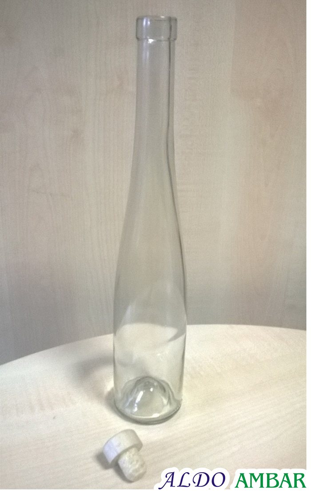
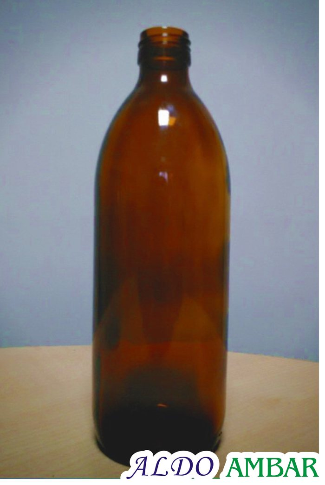

Oferta
Asortyment, który zna się na produkcji.
Dużą gamę surowców i dodatków oraz materiały pomocnicze dostarczamy od renomowanych producentów z kraju i zagranicy. We własnym zakresie produkujemy koncentrat magnezowy i wapniowy do mineralizacji wody.
Aromaty
Aromaty naturalne, identyczne z naturalnymi i syntetyczne – dobór zależy od środka spożywczego. Dystrybuujemy aromaty firmy JAR.
Aromaty płynne 56
- agrestowy
- ajerkoniaku
- ananasowy
- anyżowy
- arakowy
- bananowy
- brzoskwiniowy
- coli
- cynamonowy
- cytrynowy
- czekoladowy
- czarnej porzeczki
- egzotyczny
- grejpfrutowy
- gronowy
- gruszkowy
- jabłkowy
- jagodowy
- jeżynowy
- kagoru
- kiwi
- kokosowy
- koniaku
- kopru
- landrynkowy
- lemoniadowy
- lime
- lipy z miodem
- malinowy
- mango
- mandarynki
- masła
- maślany
- miętowy
- migdałowy
- miodowy
- moreli
- nektarynkowy
- oranżady
- orzechowy
- piołunu
- pomarańczowy
- poziomkowy
- różany
- rumowy
- sangrii
- śliwkowy
- śmietankowy
- toffi
- tonic
- tropikalny
- truskawkowy
- waniliowy
- winogronowy
- wiśniowy
- żurawinowy
Aromaty proszkowe 20
- agrestowy
- bananowy
- cappuccino
- cytrynowy
- czekoladowy
- czarnej porzeczki
- grejpfrutowy
- jabłkowy
- jagodowy
- malinowy
- miętowy
- migdałowy
- nektarynki
- owoców leśnych
- pomarańczowy
- poziomkowy
- śmietankowy
- truskawkowy
- waniliowy
- wiśniowy
Olejki aromatyczne 7
- anyżowy
- cytrynowy
- eukaliptusowy
- geraniowy
- lawendowy
- miętowy
- pomarańczowy
Kompozycje zapachowe do chemii gospodarczej 8
- cytrynowa
- konwalia
- miętowa
- morska
- ocean
- pinia
- zielone jabłuszko
- olejek sosnowy
Koncentraty owocowe i emulsje
Emulsje nadają napojom aromat, smak i barwę. Koncentraty – zagęszczone soki z owoców krajowych i egzotycznych – służą do napojów, lodów i wyrobów cukierniczych. Większość w wersji konwencjonalnej, część także bio i puree. Dystrybutor firmy CAROTEX.
Emulsje do napojów 19
- ananas
- brzoskwinia
- cola
- cytryna
- czarna porzeczka
- egzotyczny
- grejpfrut
- gruszka
- jabłko
- kiwi
- lemon-lime
- malina
- mandarynka
- maracuja
- oranżada
- pomarańcza
- poziomka
- truskawka
- wiśnia
Owoce południowe i egzotyczne 18
- ananas
- arbuz
- banan
- cytryna
- figa
- granat
- grejpfrut
- guava
- kiwi
- limonka
- mandarynka
- mango
- maracuja
- melon
- papaja
- pomarańcza
- pomarańcza czerwona
- rodzynki
Owoce krajowe 27
- aronia
- agrest
- borówka
- borówka brusznica
- brzoskwinia
- czarny bez
- czereśnia
- dzika róża
- gruszka
- gruszka Williams
- głóg
- jabłko
- jeżyna
- malina
- morela
- pigwa
- porzeczka czarna
- porzeczka czerwona
- truskawka
- rokitnik pospolity
- śliwka
- śliwka mirabelka
- śliwka suszona
- śliwka węgierka
- tarnina
- wiśnia
- żurawina
Owocowo-warzywne 4
- dynia
- burak czerwony
- pomidor
- marchew
Mineralne – produkcja własna 2
- magnezowy
- wapniowy
Koncentraty pomarańczowy i grejpfrutowy z Izraela – naturalne, bez konserwantów – w opakowaniach 250 kg, 25 kg, 6 kg i 1,3 kg; do produkcji napojów, a także dla gastronomii.
Dodatki spożywcze
Przepisy dopuszczają ok. 330 substancji dodatkowych i ok. 90 aromatów naturalnych i substancji aromatyzujących. Liczy się przede wszystkim bezpieczeństwo zdrowotne konsumenta.
Kwasy, konserwanty, słodziki 11
- kwas cytrynowy
- kwas L-askorbinowy E-300
- benzoesan sodu E-211
- sorbinian potasu E-202
- acesulfam K E-950
- aspartam E-951
- cyklaminian sodu E-952
- sacharynian sodu E-954
- mieszanka słodząca Natursweet S
- sukraloza
- stewia
Dodatki cukiernicze 18
- agar E-406
- białko wysokopieniste – albumina
- cytrynian potasu E-332
- cytrynian trójsodowy E-331
- etylowanilina
- glikol propylenowy E-1520
- glutaminian sodu E-621
- guma guar E-412
- guma arabska E-414
- ekstrakt kawy naturalnej
- lecytyna sojowa E-322
- maltodekstryna
- mentol krystaliczny
- monoglicerydy
- pektyna E-440
- pirosiarczyn sodu E-223
- talk spożywczy E-553b
- wanilina
Barwniki 21
- annato E-160b
- antocyjany E-163
- azorubina E-122
- betakaroten E-160a (1%, 1% olejowy, 2,5%)
- biel tytanowa E-171
- błękit brylantowy E-133
- brąz czekoladowy
- brąz kakaowy
- chlorofil
- kompleks miedziowy chlorofiliny E-141
- karmel (cukier palony, E-150a, E-150c, w proszku)
- czerń brylantowa E-151
- czerwień allura E-129
- czerwień koszenilowa E-124
- kurkumina E-100
- ryboflawina E-101
- tatrazyna E-102
- indygotyna E-132
- żółcień chinolinowa E-104
- żółcień pomarańczowa E-110
- mieszanki barwne (zieleń, fiolet, pomarańcz, żółcień jajowa)
Napoje i wody
Zamówienia przyjmuje Biuro Handlowe: tel. 12 285 18 73 lub 12 285 15 06, e-mail biuro@ambar.pl, a także sklep internetowy ALDO.
Napoje funkcjonalne
Napój profilaktyczny AMBAR – szkło 0,33 l, PET 0,5 l i 1,5 l – w 17 wersjach, m.in. AMBAR-office, -sport, -medicus, -agro, -senior. napojeprofilaktyczne.pl
Wody
Wody mineralne i lecznicze. Technologia wody stołowej wzbogaconej w magnez (100 mg/l) i wapń (200 mg/l). wodadlazdrowia.pl
Butelki szklane
Butelki na syropy, soki, wina, nalewki i alkohole. Sprzedaż hurtowa od jednej palety oraz detaliczna; przy ilościach całopaletowych – także inne modele wg preferencji klienta.

Na alkohole smakowe, lokalne i nalewki. Szkło bezbarwne, wys. 25,8 cm, 370 g.

Elegancki kształt na nalewki i alkohole smakowe. Wys. 33,7 cm, 500 g.

Na wina, likiery i nalewki. Wys. 24 cm, 540 g.

Na alkohole ekskluzywne, wina i wina musujące. Wys. 30 cm, 740 g.

Na wyroby medyczne i oleje (np. lniany, z pestek dyni). Gwint 28 mm.

Na soki, przeciery i ketchupy. Wys. 17 cm, 160 g.
Ponadto: BORDOLESE FUTURA 0,5 l, LINA 0,5 l, FENICE 0,2 l, LIEH 0,5 l, SOCZEK 0,33 l, JUNIOR 0,33 l, PIERSIÓWKA 0,1 l i 0,2 l, BORDEAUX 0,75 l (bezbarwna i oliwkowa).
Zamknięcia, kleje, etykiety, środki myjące
Przedstawiciel fińskiej firmy Finn-Korkki (kapsle z kółkiem) i dystrybutor kapsli koronowych CAN-PACK. Kleje AKWAWIT i HELIOS. Projektujemy i drukujemy etykiety – katalog gotowych projektów do adaptacji.
Kapsle i nakrętki 6
- kapsle koronowe
- kapsle RING CROWN (z kółkiem)
- nakrętki PET białe
- nakrętki PET kolorowe
- nakrętki PET z uszczelką
- nakrętki sport cap 28 mm
Etykiety i druki 7
- etykiety małe 55×90
- etykiety średnie 75×90
- etykiety duże 100×120
- etykiety podłużne 75×220, 120×290, 120×320
- etykiety wg potrzeb klienta
- winietki, foldery, druki
- projekty graficzne
Kleje 5
- HELIOS – do szkła, PET i plastiku, puszek metalowych
- COLLODIN – do szkła, PET i plastiku
- AKWAWIT – klej dekstrynowy do szkła
- Klej D-Extra do kartonów
- Dekstryna żółta w proszku
Opakowania 3
- folia stretch
- folia termokurczliwa
- papier pakowy
Środki myjące 2
- Rumil-801
- soda kaustyczna
Technologia i receptury
Opracowujemy technologie, receptury i normy zakładowe dla produkcji napojów oraz pomagamy wdrożyć GHP, GMP i HACCP.
Technologia
technologia produkcji napojów, technologia produkcji wody magnezowej
Receptury
napojów bezalkoholowych, wody mineralizowanej
Normy zakładowe
na napoje gazowane, napoje niegazowane, wodę mineralizowaną
HACCP / GHP / GMP
wdrażanie zasad Dobrej Praktyki Higienicznej, Dobrej Praktyki Produkcyjnej i HACCP, szkolenia
Maszyny i urządzenia
dobór i montaż maszyn i urządzeń
Cenniki i karty techniczne produktów: [do uzupełnienia]